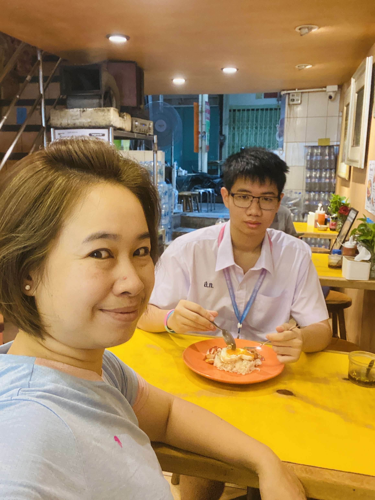
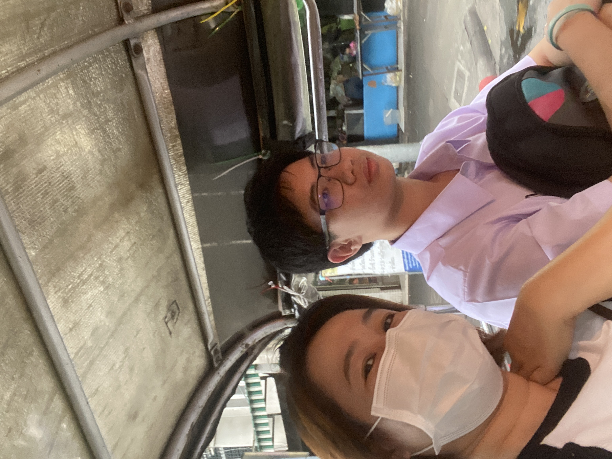
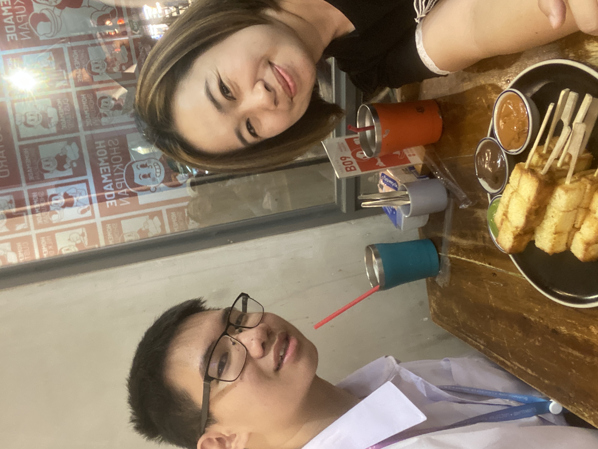

💙วันแม่แห่งชาติ💙
สิ่งที่อยากบอกแม่
ผมขอบคุณแม่ที่ให้กำเนิดผม และเลี้ยงดูผมมาตั้งแต่เด็ก ถึงแม้ว่าผมจะทำผิดในบางครั้ง แม่ก็จะให้อภัยผมเสมอ ผมจะตั้งใจเรียนและเป็นคนดีครับ

 
บทกลอนมอบให้แม่
ในดวงจิตคิดคำนึงถึงมารดาผู้ที่มอบดวงชีวาแก่ลูกนี้
ท่านสอนสั่งเลี้ยงให้ลูกเป็นคนดี
ท่านผู้นี้คือท่านแม่ของเราเอง